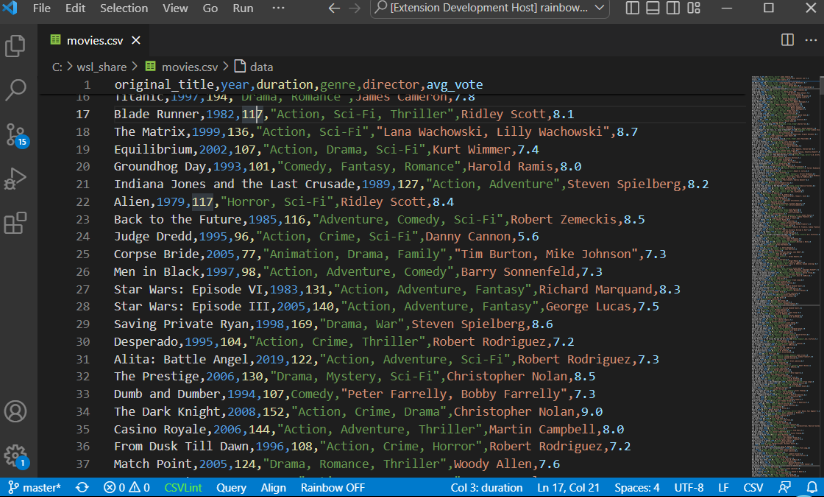
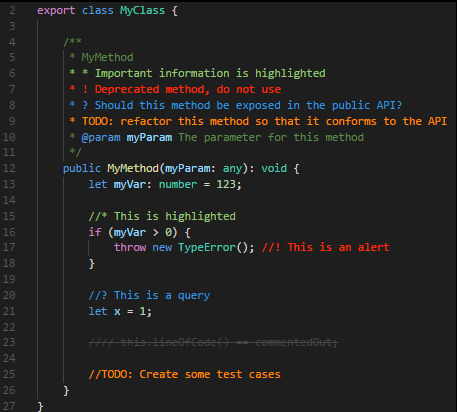
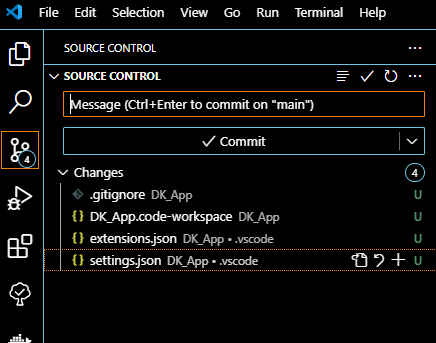

Introduction
This is a detailed tutorial for making a full stack app using Python for the backend and react for the front end. This tutorial will cover nearly every part of the process nearly line by line at the end of which you should have a fully functional app and a solid understanding of the basics of a full stack development process.
Disclaimer: I am learning most of these skills as I write this tutorial. Please give any feed back to help me fix mistakes.
I was inspired to make this as when I was trying to learn these skill I had to keep jumping back and forth between and bunch of different tutorials that all covered small parts of the process and then had to fill in the gaps myself. I wanted to make a tutorial that covered everything so that it could be used as a all in one resource (at least if you are using this stack)
Covered Topics
As this tutorial shows nearly every step of creating a full web based api and app there are many tools involved. This is a list of most of the tools that will be used. There is no guarantee that the tutorial will cover them in detail, but it will explain how to use them in service of this project.
- Git
- VScode
- Python
- FastAPI
- SQLite
- SQLalchamy
- Pytest
- Numpy docs/sphinx
- UV
- uvicorn
- Docker
- React
- Next
- More?
App Overview
The app that this tutorial will show is DK app, DK is my and my partners initials. I wanted to make an app that we could use as a synced grocery list, and started adding features like todo lists, recipes, budgets and more.
The app has to main parts. The backend is a python server using fastapi running on a uvicorn serving in a docker image. This will take web requests to save or request data. The frontend will be a website in react and hopefully an app in react native that can be used to access the grocery list, todo list etc...
The complete app can be found here: LINK
Tutorial Overview
These are the main chapters of the tutorial:
- Introduction
- (what your reading now)
- Setup and installation
- This will cover installing and setting up VSCode, git, and more.
- Configuring VSCode and git, and creating the initial project directory
- Server
- This will cover making the fastapi server along with the database
- Web App
- This will cover making the website version of the app
- Native App
- This will cover making the mobile app version
- Appendix
- This is a collection of various extra resources
Feedback
As I said I am not an expert at these tools, this is just me documenting each step I took to make DK app in a tutorial format. If there are any mistakes, questions, and anything else you want to add you can send an email here:
License
VS Code Setup
VS Code is our IDE of choice for this project. It is pretty lightweight and can be configured with plugins to work with nearly any project or programing language.
Install
VS Code can be found here:
https://code.visualstudio.com/docs/setup/setup-overview
It is available for Windows, Linux, and Mac.
Setup
Config
VS Code's setting can be configured through its UI or by editing the json file. I have preferred to use the json file as it is easier to copy paste multiple settings. You should be able to use the search bar of the setting's UI to change each of the settings in the UI if you decided not to go with the json file.
VS Code has different layers of settings. It has global or profile settings that apply to the whole editor, or profile and folder settings that can overwrite the global settings in a specific directory.
Note that the settings.json file should be a pair of {} and each setting should be separated by commas.
Hovering over a setting in the json file should have VS Code pull up a short description of the setting.
These are some of the main settings that I set for my editor:
// Workbench settings
"workbench.settings.editor": "json",
"workbench.tree.indent": 16,
"workbench.colorTheme": "Default High Contrast",
-
editoris how you choose if you want the settings button to open the UI or the json file. -
indentis how many pixels you want indentions to be in the file explorer. -
colorTemeis the theme for VS Code a list of which can be found here
// Explorer Settings
"explorer.autoReveal": true,
"explorer.confirmDragAndDrop": false,
-
autoRevealwill cause the file explorer to expand directories and highlight the file you are actively working on. Some preferer to turn this off and use something like locate this document instead. -
confirmDragAndDropwill ask for confirmation any time you drag and drop files, moving them around the project directory.
// Editor setings
"files.autoSave": "onFocusChange",
"editor.insertSpaces": false,
"editor.cursorStyle": "block",
autoSavein this mode files will be saved as soon as you click off of them. This can sometimes be annoying though when combined with formatting on save, but I prefer it over trying to figure out why my changes are not working only to find out I haven't saved changes to three of the files I was editing ten minutes ago.insertSpaceswith this false tab will do what it is supposed to do and insert a tab. I use keyboard to navigate to cursor pretty often while working and use shift + arrow keys to select text and I hate having to click through each of the spaces that get added in for indentions and much prefer tabs.cursorStyleis just choosing a character width block like command lines often have, or a bar the sits between characters like most modern applications.
There is plenty of other settings to explore if you want to further customize. I will cover the setting some more when I am explaining setting up the folder level setting for the different parts of the project.
Appendix VS Code Configs
Extensions
This is a list of general extensions that I recommend for VS Code. Most extensions have their own settings that can be added to your global or folder settings files.
General
Rainbow CSB:
mechatroner.rainbow-csv
This one has many features for editing and searching csv (comma separated values) files. The main feature is that it colors the text of different columns of the cvs the same colors to better see what each of the values in a row match to each of the. It also has tools for SQL like queries on the csv files and and more.

Better Comments
aaron-bond.better-comments
This adds a few options to mark code comments as specific types of messages.

Todo Tree
Gruntfuggly.todo-tree
This highlights comments that start with TODO
# TODO Fix
// TODO Fix
and creates a file directory like tree of them that can be accessed on the side bar. This is useful to mark function templates that need to be implemented, or debugging code to be removed.
For the debug marker, DEBUG would need to be added to the settings file:
"todo-tree.general.tags": [
"BUG",
"HACK",
"FIXME",
"TODO",
"XXX",
"DEBUG",
"[ ]",
"[x]"
],
There are plenty of other settings for it and you add or change the tags to what ever you prefer.
VsCode Action Buttons
seunlanlege.action-buttons
This allows you to add customized buttons to the bottom of the workspace used to quickly run commands. This is useful when commands to build, run, debug or other tasks require longer commands and you want a quick way to repeat those commands.
This is an example of a button to run pytest with options:
// Action Buttons
"actionButtons": {
"commands": [
{
"name": "pytest",
"color": "yellow",
"command": "uv run pytest -v -rP"
}
],
"defaultColor": "white",
"reloadButton": "↻",
"loadNpmCommands": false
},
Error Lens
usernamehw.errorlens
This just adds more aggressive highlighting of errors with plenty of settings to customize it.
Even Better TOML
tamasfe.even-better-toml
This adds formatting and checking of toml files, which will be useful for this project.
Dependi
fill-labs.dependi
This can check dependencies for a few different languages like Go, Rust, Python, others. This will help make sure the the dependencies we are using are up-to-date or don't have known vulnerabilities.
A full list of extensions I use can be found in 
Git
Git is a version control tool that is very common for most projects. In it most simple form it is used to create a set of save states of the project so that if a change cause major unrecoverable issues you can roll your project back to an older version you know works.
It can also be used with platforms like GitHub to store your projects in the cloud and coordinate changes between multiple computers or team members.
Another common use relevant to us is to create branches where you can work on implementing a new feature or explore experimental ideas saving those changes to a different branch with out affecting the main known functional version.
Install
Git can be found here: https://git-scm.com/
Setup
Most of the setup will be covered in creating the project structure.
Git's basic parts though are made up of a .git directory that is managed by git, and .gitignore files that list files to not include in the version management.
Config
Git can be configured through the command line. The most common config that you will likely have to change is your name, and email.
git config --global user.name "<NAME>"
git config --global user.email "<EMAIL>"
These will be used to record who created the changes for the commit (project save), and the email will be used to match accounts if you are pushing you project to a remote platform like GitHub.
Quick reference of common git commands: Git Cheat Sheet
Project Structure
Now that we have some of our general tools installed we can begin setting up the projects main directory, set up git, and make our first commit.
Making the Project Directory
There are two ways to make the initial folder.
- Create a folder on your computer and use git init
- Create a project on GitHub, or platform or choice, and clone the repository.
I will be doing the second, but the first will work fine, you just skip any steps pertaining to GitHub.
Create the GitHub Project
- Create the name for your project. Mine will be
DK_Appso any time I useDK_Appyou will likely need to use your own projects name. - Add a description
- Set Public or Private
- Add the README
- Add the license. I am using the "AGPL-3.0 license" and if you are directly following this tutorial to copy its code you will also need to include this license in you project.
- Create
Clone the GitHub Project
I will be using ssh for communication with GitHub. A tutorial for setting that up for windows can be found here.
Once you have you ssh key set up you can clone the project.
With git install for windows I can right click where I would like the project file to live and pick "Open Git Bash here"
Copy the ssh url from GitHub by clicking the green "clone" button and picking ssh.
then in the git bash shell run:
git clone <PASTE URL>
for window crtl+v and crtl+shift+v both did not work and I had to right click paste the url.
It will then ask you to add GitHub's fingerprint to your list of known hosts.
If you are not using a platform like GitHub instead create a folder with the name of your project then:
- run
git initfrom the git bash shell in that folder - add an empty README.md file
- add the license file
Open in VS Code
You can right click the folder and select "Open with VS Code" or open VS Code and use "Open Folder as Project"
Now you can use VS Code to edit the README file and add a description of the project. This is where you can eventually add the instructions to install and setup, and various links to documentation, tutorials, or socials. This file uses markdown for its formatting
We also want to add a .gitignore file. This is what we will use to exclude files from being tracked by git. This is to ignore files the builds, caches, or files holding sensitive data like private keys.
We also need to make the workspace folder for the next part of the project, the python server. I called this folder dk_server_ws
We also make a .vscode directory, that we can put settings and extension files in. Any setting you add here will be applied to all projects in this git repository. I am not going to add any here and will be adding settings based on the individual projects.
We will make an extensions.json file in the .vscode directory. This is where we can list VSCode extension that this project uses. This is the list of recommendations I had in the setup.
{
"recommendations": [
"mechatroner.rainbow-csv",
"aaron-bond.better-comments",
"Gruntfuggly.todo-tree",
"seunlanlege.action-buttons",
"usernamehw.errorlens",
"tamasfe.even-better-toml",
"fill-labs.dependi",
]
}
Now when you or anyone cloning your project should see these extensions in their recommendations in VS Code.
Workspaces
Workspaces allow you effectively open multiple vs code projects at the same time under a single VSCode explorer. The workspace folders do not have to be in the same parent folder, but in this case they will be. More details on workspaces link.
We can add a workspace for the server project by right clicking in the explorer and choosing "add folder to workspace" then picking the dk_server_ws directory.
We then want to save the workspace to a file in the main projects directory using "save workspace as" in the "file" menu. When we reopen VSCode to work on the project we will want to use "open workspace from file" and open this file.
Directory Overview
DK_App
|_ .vscode
| |_ extensions.json
| |_ settings.json
|_ dk_server_ws
|_ .gitignore
|_ DK_App.code-workspace
|_ LICENSE
|_ README.md
Appendix Project Directory Structure
Commit and push
Now we can create a commit (project version save) and push it to our remote repository.

I will mostly use the UI for this (for now at least).
- Click source control on the left.
- Add a message for the commit that describes the changes:
- "Updated the readme, and created the workspace for the folder"
- Hit "commit", it will then ask if you want to stage the changes, you do.
- If it has an error about name and email you need to use git config Git Trouble Shoot.
- Then you can hit "sync" to push to GitHub.
We now have our initial parent project set up and can move to starting on the server project.
Extra: Command Line git
git add .
git commit -m "Updated the readme, and created the workspace for the folder"
git push
This is the equivalent command for the UI process. Git Cheat Sheet
UV
UV is going to be our python package/version manager of choice.
This is where you can download UV, and learn more about it. UV lets your create a isolated version of python for our project and can add and remove dependences for us and manage tools like pytest. There is not to much more to say about it, but now with this we can begin setting of the server side of the project.
Introduction
The first part of the project that we will be working on is creating the backed which will be a python FastAPI server that uses a SQLite database to save data.
FastAPI
FastAPI is how our mobile app and website will communicate with the server to request and submit data. FastAPI works through http requests where the arguments of the request are encoded into the URL.
Example:
POST dkapp.com/grocery/item/1/"Soup"/2
POST, grocery, and item define the path for the function being called, and 1, "Soup", and 2 are augments passed to the function.
Plan
Here is an overview of how this project will go.
- We start a new git branch for development of the server.
- Use UV to create the python environment.
- Add VSCode extensions, add dependences for Pytest, and Numpy docs.
- Make a "Hello World" server.
- Set up Docker and configure the project to hot reload in it.
- Design and setup the database.
- Then add features, add tests, add docs, commit for:
- CRUD on the database.
- Routes
- Authentications
- etc.
Lets get started.
FastAPI Hello World
To test that all these extensions are working and that the settings are properly configured we need to make our "hello world program"
First Hello
Before we try to make the server lets just try to run any python file.
In main.py add:
def main():
print("Hello World")
if __name__ == "__main__":
main()
and run
uv run .\dk-server\src\dk_server\main.py
you might need to change the slash depending on which platform you are on, and the names in the path to match your project. You also need to make sure that this is ran with the workspace as the working directory.
Hopefully you should see Hello World in the output.
Hello (but server this time)
Now we need to add some dependencies to the project.
First we run:
uv add --directory .\dk-server\ fastapi "uvicorn[standard]"
uvicorn is the server that we will be using to host our api.
This should add fastapi and uvicorn to our pyproject.toml file.
(--directory \dk-erver\ is only needed if you are running your terminal commands from with the workspace as the working directory, I will be using that as my working directory for all further steps unless specified.)
We then change main.py to:
from fastapi import FastAPI, Response
app = FastAPI()
@app.get("/")
def root():
return Response(content="This is dk_server Root", media_type="text")
To test this we then run:
uv run --directory .\dk-server\ uvicorn --app-dir .\dk-server\src\ dk_server.main:app --reload
--app-dir is where the server package is located.
--reload means that the server will stay running and anytime changes are made, the server will automatically reset and add those changes.
To test if it is working you can enter the url localhost:8000 in to your browser and it should return "This is dk_server Root"
Hello (but container this time)
The next thing to test to running the server from a docker image and container.
You will need to have docker installed. https://www.docker.com/
[[Appendix]]
Setup Git User Info
git config --global user.name "NAME"
git config --global user.email "EMAIL"
No user or email for commit
Add you name and email using:
git config --global user.name "NAME"
git config --global user.email "EMAIL"
With or without the --global option.
docker build -t <IMAGE-NAME> .